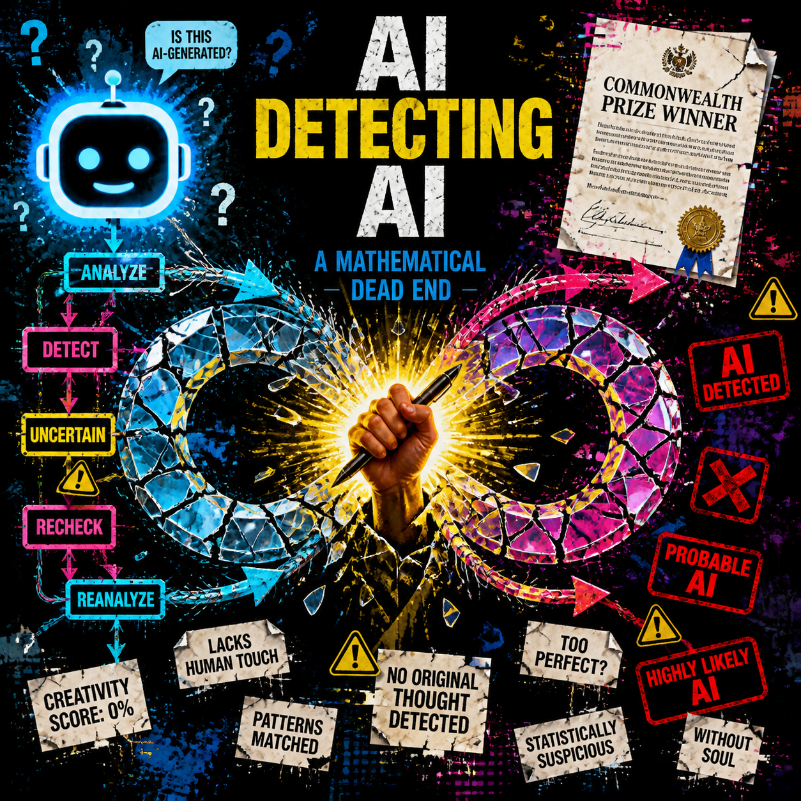

A major literary prize just awarded a story that appears to be AI-generated. The publisher's response was to run it through Claude and ask, "Is this AI?" Claude could not give a definitive answer. The Commonwealth Foundation admitted it has no reliable detection method for unpublished fiction. This is not a failure of diligence. It is a mathematical dead end.
Large language models are trained to sound human. Asking one LLM to detect another LLM is asking a mimic to identify a mimic. The entire AI detection industry is built on this contradiction, and the "vibe slop" crisis, a flood of plausible-sounding but fundamentally broken AI-generated content, is coming whether we can detect it or not. The question is no longer "how do we catch AI content?" It is "what do we build when catching it becomes impossible?"
The Granta Incident: Detection's Empire of Dust
Every year since 2012, the British literary magazine Granta has published the regional winners of the annual Commonwealth Short Story Prize. The prize carries prestige across the Commonwealth's 56 member nations, and winning it is a career-defining achievement for emerging writers. This year, one selection stood out for the wrong reasons. Jamir Nazir's "The Serpent in the Grove" carried hallmarks that have become recognizable to anyone who reads enough AI-generated prose: mixed metaphors, anaphora, lists of threes, and that particular rhythm that sounds polished but hollow, like a photocopy of emotion rather than the real thing.
Nabeel S. Qureshi, a former visiting scholar of AI at the Mercatus Center at George Mason University, was among the first to flag the story publicly. For Qureshi, the opening sentences were evidence enough:
"They say the grove still hums at noon. Not the bees' neat industry or the clean rasp of cutlass on vibe, but a belly sound, as if the earth swallows a shout and holds it there."
Qureshi told The Verge that the piece read to him like the far end of the AI-use spectrum: "In general, AI writing has a particular rhythm that I've learned to pick up on which is hard to describe," he said via email. "There's a spectrum from 'AI helped me edit' to 'AI wrote this.' This case reads to me like the latter end of that, though of course I don't know for sure." (The Verge, May 22, 2026)

The problem is that even when AI use is widely suspected, none of us really know for sure. Commonwealth Foundation director-general Razmi Farook stated that the organization is aware of allegations regarding AI in prizewinning stories, including Nazir's. Farook noted that all writers who submitted work for the prize are asked whether they are sending original, unpublished work, and that all shortlisted writers have personally stated no AI was used to help them draft their stories. But then came the concession that exposed the entire industry: "Until a sufficient tool or process to reliably detect the use of AI emerges that can also grapple with the challenges pertaining to working with unpublished fiction, the Foundation and the Commonwealth Short Story Prize must operate on the principle of trust." (The Verge, May 22, 2026)
Granta publisher Sigrid Rausing went further, revealing how the magazine actually handled the suspicion. In a statement, Rausing said Granta ran Nazir's story through Claude "and asked whether it was AI-generated." Claude's response was long and hedging, concluding that the piece was "almost certainly not produced unaided by a human." Rausing's statement then landed on the devastating truth: "It may be that the judges have now awarded a prize to an instance of AI plagiarism, we don't yet know, and perhaps we never will know." (The Verge, May 22, 2026)
Here is the absurdity in plain language: a prestigious literary publisher used a chatbot to judge whether a chatbot wrote a story. Claude is not an AI detection tool. It is a large language model, the same species of system it was being asked to identify. The fact that Granta tried this at all demonstrates that even sophisticated literary institutions do not understand what they are dealing with. The Commonwealth Foundation's admission confirms what the detection industry will not say out loud: there are no reliable defenses for unpublished fiction, and there will not be.
The Verge's own writer, Gaby Del Valle, added a layer of self-awareness that cuts to the heart of the problem. Del Valle ran Nazir's story through Pangram, an AI and plagiarism detection tool. Pangram declared it 100 percent AI-generated. But Del Valle then ran her own unpublished book excerpt through the same tool. Pangram declared it 100 percent human-written, which it was. Then Del Valle ran an excerpt from Verge editor Kevin Nguyen's novel through Pangram. Human. The tools work when they are right and fail when they are wrong, and we have no independent way to know which is which.
This is not a technology problem that better technology will solve. It is an epistemological problem. When the forger is mathematically indistinguishable from the artist, detection becomes philosophy, not engineering.
The Mathematical Impossibility
Why can one LLM not reliably detect another? The answer begins with the training data. Both systems are trained on the same distribution of human text: books, articles, Reddit threads, code repositories, and every other scrap of language the internet could offer. They learn the same patterns, the same rhythms, the same statistical associations between words. Perplexity metrics, burstiness scores, and stylistic fingerprints are the standard tools of the detection industry, and they are already being gamed by prompt engineering.
When you ask a model to "write in the style of Hemingway," the detection tools look for Hemingway patterns, not AI patterns. When you ask a model to vary sentence length, to insert intentional grammatical irregularities, to mimic a specific human author's tics, the statistical signatures that detectors claim to measure become useless. The arms race was over before the market for detection tools even formed.
A parallel case arrives from the security world that underscores how quickly camouflage breaks formal detection. A May 2026 arXiv paper, "Blind Spots in the Guard: How Domain-Camouflaged Injection Attacks Evade Detection in Multi-Agent LLM Systems," found that when attack payloads are generated to mimic the vocabulary and authority structures of their target domain, standard detectors collapse completely. The detection rates on Llama 3.1 8B fell from 93.8% to 9.7% when payloads used domain camouflage. Llama Guard 3, a production safety classifier from Meta, detected zero camouflaged payloads. The paper concludes that the vulnerability is architectural rather than incidental (arXiv:2605.22001, May 2026).
If safety classifiers cannot spot malicious AI output when it wears a domain-appropriate disguise, how can a literary editor spot benign AI prose that has been prompt-engineered to sound literary? The answer is that they cannot, and neither can any tool they might buy.
The "vibe slop" crisis warning, reported by leading AI researchers and developers, predicts a glut of low-quality AI-generated content that looks superficially plausible but is fundamentally broken (WSJ, May 22, 2026). The people building the tools admit the problem is inevitable. The very researchers who created the systems are now warning that we are about to be flooded with content that has the surface texture of competence without the underlying substance.
The contradiction at the heart of the detection industry is brutally simple: you cannot build a reliable detector for a system whose entire purpose is to imitate the thing you are trying to protect. Every detection startup pitching enterprise clients on AI-content scanning is selling a hope, not a product. The mathematics do not support the claims. The benchmarks are cherry-picked. The real world, where AI prose is prompt-engineered to evade detection, is not the lab bench where these tools are validated.
The Collapsing Systems
Publishing is just the most visible failure. Granta and the Commonwealth Prize are the tip of an iceberg that is already underwater across every content industry.
Barnes & Noble CEO James Daunt sparked boycott calls when he appeared on the Today show and stated he had "no problem selling any book, as long as it doesn't masquerade or pretend to be something that it isn't. So, as long as an AI-written book says it's an AI-written book, then we will stock them." By Wednesday, thousands of calls to boycott the bookseller had flooded social media. Author Cristin Bishara wrote: "As an author this is the most depressing news. I've been saying for a long time that this was coming. People told me I was overreacting."
Daunt later walked back his comments, clarifying that Barnes & Noble takes "active measures to exclude all AI generated books" and that the chain demands publishers label any AI-generated titles. But he also added a hedging principle: "Book banning is a clear and present danger, so we are very careful with demands to ban any books," while remaining vigilant "not to sell AI generated books that masquerade to be by real authors." (LA Times, May 20, 2026) The clarification did not fully extinguish the controversy, because the underlying problem remains unsolved. The literary world operates on trust, and that trust assumes authorship is verifiable. AI breaks the assumption.
In journalism, Politico agreed to shut down both AI tools at the center of a landmark arbitration case in May 2026 (WBNG / Hacker News, May 22, 2026). The legal precedent matters enormously: newsrooms experimenting with AI content generation received one of the first major legal defeats, signaling that courts may not accept AI-verified information as meeting journalistic standards.
Enterprise faces the same collapse, though more quietly. Starbucks scrapped an AI inventory management tool across North America after it failed to deliver promised efficiencies (Reuters, May 21, 2026). Meanwhile, ZDNet reported that 96% of IT professionals now use AI, according to May 2026 data. That statistic masks the gap between adoption and successful deployment. "Vibe slop" is not just content. It is broken code, bad recommendations, failed automation, and hallucinated reports, all dressed in plausible language that passes a casual read.
The common thread across every domain is this: the gap between "AI-generated" and "AI-verified" is widening, and we are betting on verification tools that cannot work. Publishers cannot verify submissions. Newsrooms cannot verify reporting. Enterprises cannot verify the outputs they are paying for. The detection industry promises a technical solution to what is actually a trust-structure problem.
What Replaces Detection?
If detection is impossible, the next question is what infrastructure we build instead. The answer is not a single tool. It is a fundamental shift in how we think about authenticity itself.
Provenance over detection. Canonry, an open-source platform, tracks how AI systems cite content across Gemini, ChatGPT, Claude, and Perplexity (github.com/AINYC/canonry). The question stops being "is this AI?" and starts being "where did this come from?" Attribution becomes the new authenticity. Instead of trying to spot the fake, build systems that track the real. When every AI-generated article, every AI-assisted report, and every fully-automated analysis carries an immutable chain of origin, readers and editors can evaluate the source rather than guessing at the authorship.
The Spotify-Universal Music deal offers a constructive model that other industries should study. Instead of attempting to ban AI covers and remixes, the companies reportedly built a royalty framework that compensates original artists while enabling fan creativity (TechCrunch, May 22, 2026). The solution is not prohibition. It is provenance plus compensation. When the music industry, historically hostile to technological disruption, chooses attribution and payment over detection and enforcement, every other content industry should pay attention. The framework treats AI-generated content as inevitable and manages it through economic incentives rather than vain attempts at technical blocking.
Human-in-the-loop verification means not asking AI to detect AI, but requiring human sign-off on high-stakes outputs. Hark, a startup building what it calls a "universal AI interface," reportedly closed a $700 million Series A round in May 2026. The product specifics remain vague, but the category it implies is where real investment is flowing: human-AI collaboration layers that insert human judgment at critical decision points rather than delegating verification to algorithms. If detection is impossible, the alternative is design. Build systems where AI generates and humans validate, where the loop closes with a person rather than a score.
Structural incentives must change what gets rewarded. If AI-generated slop floods recommendation algorithms, the platforms that rank it are complicit. Build ranking systems that privilege provenance, not just engagement. A text is not authentic because of how it reads. It is authentic because of how it was made and who can vouch for it. The philosophical shift is from "authenticity as property of the text" to "authenticity as property of the process." A novel is not genuine because of its sentence structure. It is genuine because the author can tell you where they wrote it, what they were reading at the time, and which draft number this represents.
This shift is already beginning in domains that have learned the hard way. The Canonry platform tracks AI citations not to catch cheaters but to map influence. The Spotify deal licenses rather than bans. The Hark investment bets on interfaces that keep humans in control. None of these are detection technologies. All of them are post-detection infrastructures.
The Practical Takeaway
For publishers and editors: stop investing in AI detection tools. The money is wasted. Invest instead in provenance systems, in detailed submission questionnaires that ask not "did you use AI?" but "what tools did you use, in what ways, at what stages?" Build editorial processes that evaluate content on its merits and its traceability. The detection market is selling snake oil, and the buyers are institutions that should know better.
For developers: if you are building with AI, assume your outputs will be indistinguishable from human work. Build that assumption into your product from day one. Transparency becomes a feature, not a liability. Label your AI-generated outputs clearly. Provide provenance metadata. Design for human review in your output pipeline. The companies that treat transparency as a competitive advantage will outlast the ones that treat it as a risk to be hidden.
For readers and consumers: the internet is about to get much noisier. The skill that matters is not spotting AI content. It is evaluating source credibility regardless of origin. Learn to ask: who published this, what is their track record, what claims can be independently verified, and what would it cost the author to be wrong? These are the same critical reading skills that mattered before AI, and they are the only ones that will matter after detection becomes impossible.
For policymakers: the Politico arbitration is a template. Do not try to detect AI. The technology does not support it. Instead, regulate how AI content is labeled, attributed, and compensated. Build legal frameworks around provenance and economic harm, not around technical classification. Detection is a technical fantasy. Provenance is a policy framework that can actually be enforced.
The detection delusion has cost the industry millions in wasted tooling and broken trust. It has sent publishers chasing solutions that do not exist, made detection startups rich on false promises, and convinced the public that there is a technological answer to what is actually a structural question. The sooner we abandon the fantasy of detection, the sooner we can build what actually works: systems of attribution, human judgment, and economic incentives that make authenticity valuable rather than merely detectable.
The mimic cannot catch the mimic. That is not a bug. It is the design.
Get More Articles Like This
AI detection is just one front in the war for digital trust. I'm documenting every shift in the AI landscape as it happens.
Subscribe to receive updates when we publish new content. No spam, just real analysis from the trenches.